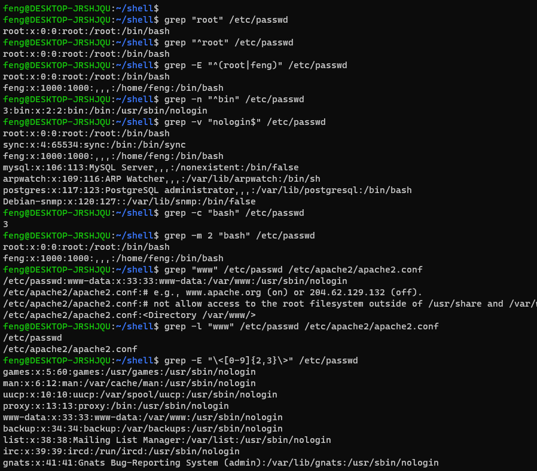
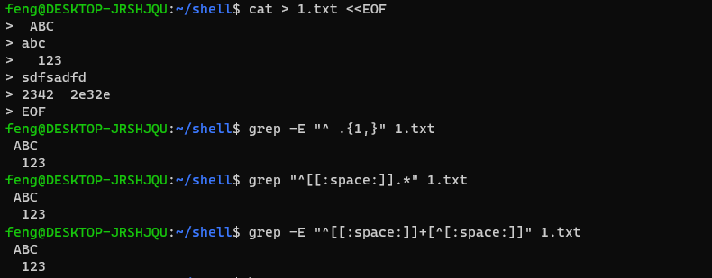
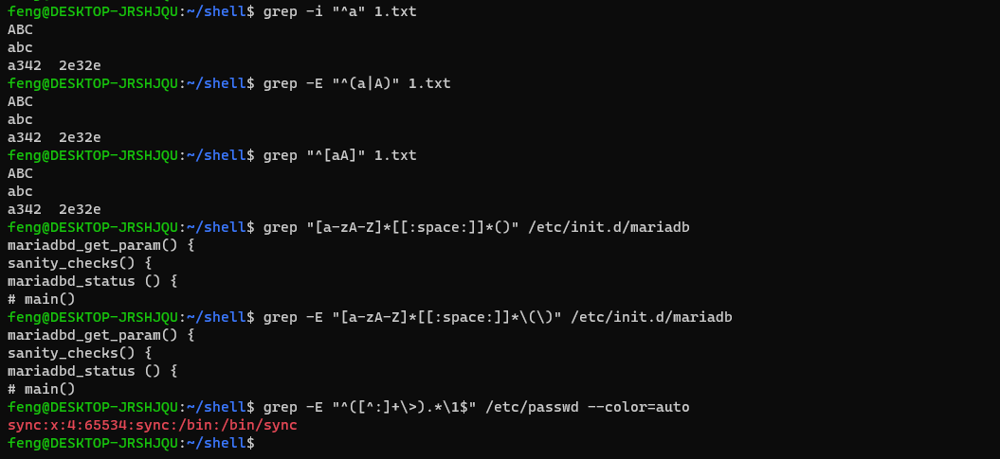
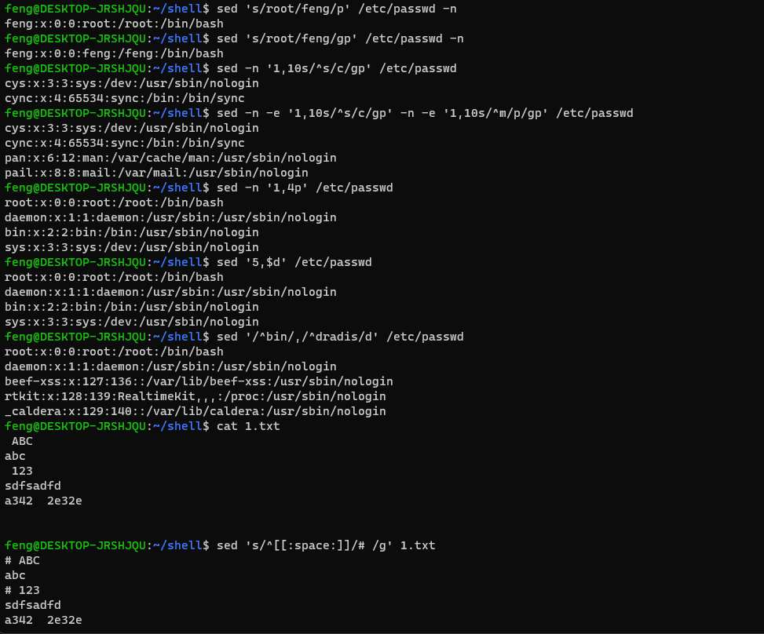
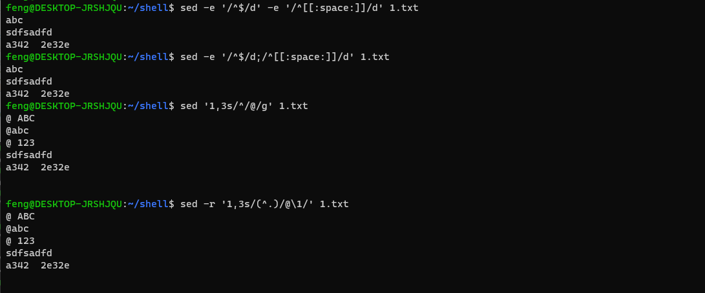

grep sed awk 练习
系列学完了，这是第二期。(其实应该这个先学的) bash 基础
接下来是有名的第三方工具 (正则表达式 awk sed grep等等)
grep
1
2
3
4
5
6
7
8
9
10
11
12
13
14
15
16
17
18
19
20
21
22
23
24
25
26
27
28
29
30
31
32
33
|
grep "root" /etc/passwd
grep "^root" /etc/passwd
grep -E "^(root|feng)" /etc/passwd
grep -n "^bin" /etc/passwd
grep -v "nologin$" /etc/passwd
grep -c "bash" /etc/passwd
grep -m 2 "bash" /etc/passwd
grep "www" /etc/passwd /etc/apache2/apache2.conf
grep -l "www" /etc/passwd /etc/apache2/apache2.conf
grep -E "\<[0-9]{2,3}\>" /etc/passwd
grep -E "^ .{1,}" 1.txt
grep "^[[:space:]].*" 1.txt
grep -E "^[[:space:]]+[^[:space:]]" 1.txt
grep -i "^a" 1.txt
grep -E "^(a|A)" 1.txt
grep "^[aA]" 1.txt
grep "[a-zA-Z]*[[:space:]]*()" /etc/init.d/mariadb
grep -E "[a-zA-Z]*[[:space:]]*\(\)" /etc/init.d/mariadb
grep -E "^([^:]+\>).*\1$" /etc/passwd --color=auto
|



sed
1
2
3
4
5
6
7
8
9
10
11
12
13
14
15
16
17
18
19
20
21
|
sed 's/root/feng/p' /etc/passwd -n
sed 's/root/feng/gp' /etc/passwd -n
sed -n '1,10s/^s/c/gp' /etc/passwd
sed -n -e '1,10s/^s/c/gp' -n -e '1,10s/^m/p/gp' /etc/passwd
sed -n '1,4p' /etc/passwd
sed '5,$d' /etc/passwd
sed '/^bin/,/^dradis/d' /etc/passwd
cat 1.txt
sed 's/^[[:space:]]/# /g' 1.txt
sed -e '/^$/d' -e '/^[[:space:]]/d' 1.txt
sed -e '/^$/d;/^[[:space:]]/d' 1.txt
sed '1,3s/^/@/g' 1.txt
sed -r '1,3s/(^.)/@\1/' 1.txt
|


awk